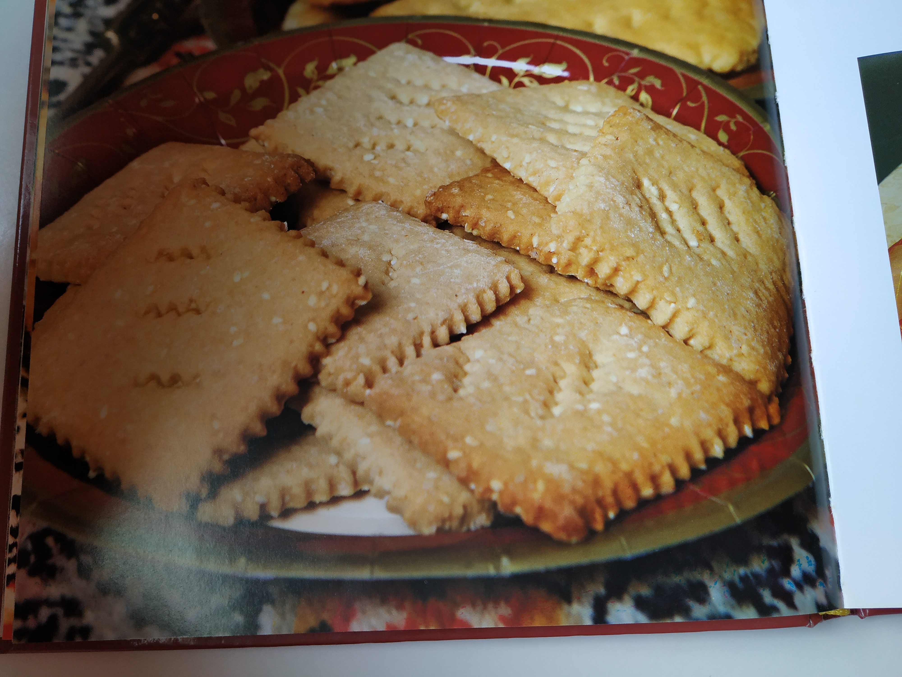

ספינז

מתכון לעוגיות ספינז לחנוכה
דרגת קושי:בינוני
זמן הכנה:שעה
מספר יחידות: 30
רכיבים:
1 ק"ג קמח
60 גר' שמרים
1 כף סוכר
קצת מלח
3-4 כוסות מים
הוראות הכנה:
לערבב ביד עד שיוצאים כל הבועות
לערבל במערבל
לתת לתפוח פעמים